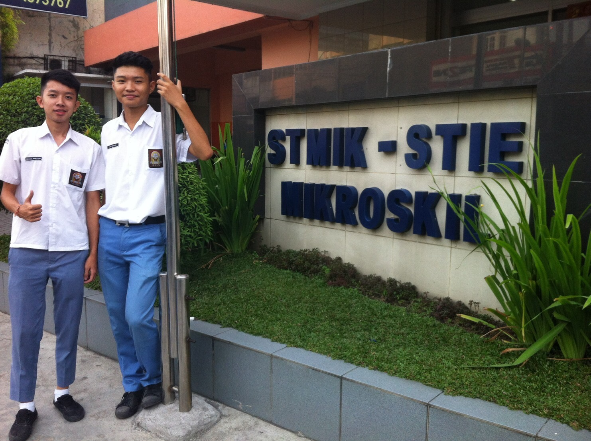

Pilihlah Jurusan Yang Tepat Untuk Anda
Memilih Jurusan Yang Tepat Dapat Menjanjikan Masa Depan Yang Cerah
Di susun Oleh :
Raynald - 161110218 Alvin Hardi - 161112561 Kendrick Salim - 161111205 Mikhael - 161110307
Themes
-Black (default) -White -League -Sky -Beige -Simple -Serif -Blood -Night -Moon -Solarized
Latar Belakang
- Banyaknya pelajar di Indonesia yang merasa bahwa diri mereka salah jurusan sehingga sering terjadi drop out
- Banyaknya pelajar di Indonesia yang saat merasa salah jurusan melakukan pindah jurusan
HOT NEWS
SEBANYAK 87% MAHASISWA INDONESIA SALAH JURUSAN
Sumber : https://news.okezone.com/read/2014/02/24/373/945961/duh-87-mahasiswa-indonesia-salah-jurusan
Solusi
Bagian Ekonomi
1. Managemen

Jurusan yang mempelajari mengenai tanggung jawab dalam pengelolaan sebuah perusahaan atau organisasi, yang secara singkat merupakan sebuah cabang dari ilmu bisnis.
2. Akuntansi

Jurusan yang mempelajari proses menelusuri transaksi keuangan dari suatu perusahaan. Selama dimana ada transaksi keuangan, perusahaan perlu melacak keluar masuknya aliran dana mereka untuk menentukan rugi laba yang diperoleh. Hal ini sangatlah penting dalam menilai kemajuan dalam suatu perusahaan.
Bagian Komputer
1. Teknik Informatika

Suatu jurusan yang mempelajari bagaimana penerapan logika matematika dalam pengelolaan informasi yang dapat meliputi transpormasi data atau pengolahan fakta – fakta simbolik dengan memanfaatkan teknologi computer semaksimal mungkin.
2. Sistem Informasi
Jurusan yang merupakan gabungan dari Ilmu Komputer, Ekonomi Manajemen, dan Bisnis. Fokusnya tetap di bidang software (programming), tapi lebih ke arah penerapan ke bisnis perusahaan.
Bagian Teknik
1. Arsitektur
Jurusan yang mempelajari ilmu yang berhubungan dengan perencanaan, desain dan konstruksi bangunan dengan mempertimbangkan faktor-faktor seperti fungsi struktur bangunan, lingkungan dan estetika.
2. Teknik Sipil

salah satu cabang ilmu teknik yang mempelajari tentang bagaimana merancang, membangun, merenovasi tidak hanya gedung dan infrastruktur, tetapi juga mencakup lingkungan untuk kemaslahatan hidup manusia.
3. Teknik Mesin

Jurusan yang mempelajari ilmu teknik mengenai aplikasi dari prinsip fisika untuk analisis, desain, manufaktur dan pemeliharaan sebuah sistem mekanik.
4. Teknik Industri

Suatu bidang keilmuan yang mempelajari bagaimana merancang, mengatur dan mengaplikasikan semua faktor-faktor seperti manusia, mesin, metode, material, lingkungan dan analisis keuangan.
Bagian Kedokteran
1. Pendidikan Dokter

Jurusan yang mempelajari ilmu atau seni yang berkecimpung dalam pemeliharaan kesehatan, serta pencegahan, pengobatan atau menyembuhkan penyakit.
2. Dokter Gigi

Jurusan yang mempelajari mengenai struktur gigi dan segala jenis kerusakan pada gigi.
3. Farmasi

Jurusan yang mempelajari segala hal tentang obat. Mulai dari bahan kimia yang ada di dalamnya, proses pembuatan obat, proses pengemasan obat, fungsi dan kegunaan obat, sampai cara distribusi dan pengelolaan stok obat.
Bagian Hukum
1. Ilmu Hukum

Ilmu yang berpusat pada praktek hukum. Ilmu Hukum mencakup bidang yang luas meliputi hak asasi manusia, hukum kepemilikan hingga hukum perdagangan.
Bagian Sastra
1. Sastra Indonesia

Ilmu yang berfokus pada kemampuan di bidang kesastraan, kebahasaan, dan kebudayaan yang menggunakan bahasa indonesia
2. Sastra Inggris

Ilmu yang berfokus pada kemampuan di bidang kesastraan, kebahasaan, dan kebudayaan yang menggunakan bahasa inggris
Daftar Universitas / Perguruan Tinggi Terbaik Indonesia
1. Universitas Indonesia
Universitas Indonesia adalah kampus modern, komprehensif, terbuka, multi budaya, dan humanis yang mencakup disiplin ilmu yang luas. Universitas ini juga termasuk dalam peringkat ke-133 universitas terbaik asia
2. Institut Teknik Bandung (ITB)
Institut Teknik Bandung adalah sebuah perguruan tinggi negeri yang berkedudukan di Kota Bandung dan merupakan salah satu perguruan tinggi TOP Indonesia. Institut Teknik Bandung juga termasuk dalam peringkat ke-201 perguruan terbaik Asia.
3. Institut Pertanian Bogor
Institut Pertanian Bogor adalah lembaga pendidikan tinggi pertanian yang secara historis merupakan bentukan dari lembaga-lembaga pendidikan menengah dan tinggi pertanian serta kedokteran hewan yang dimulai telah pada awal abad ke-20 di Bogor. Institut Pertanian Bogor juga merupakan salah satu kampus ternama Indonesia dengan peringkat ke-301 – 350 kampus terbaik Asia.
4. Universitas Gadjah Mada
Universitas Gadjah Mada adalah universitas berkelas dunia yang menjadi pelopor perguruan tinggi nasional berkelas dunia yang unggul dan inovatif. Universitas Gadjah Mada juga merupakan universitas terbaik dengan peringkat ke-301 – 350 terbaik di Asia sama dengan Institut Pertanian Bogor
5. STMIK-STIE MIKROSKIL
STMIK – STIE Mikroskil adalah institusi perguruan tinggi swasta di bidang komputer dan ekonomi. Kampus ini merupakan kampus swasta terbaik Indonesia yang tidak hanya memfokuskan pada pendidikan, tapi juga etika mahasiswa sehingga dapat menghasilkan lulusan yang berbobot.